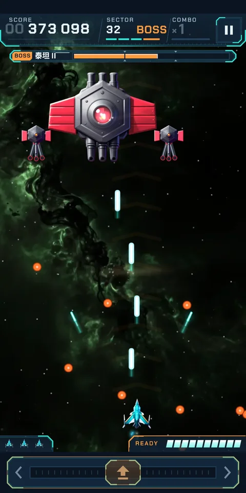
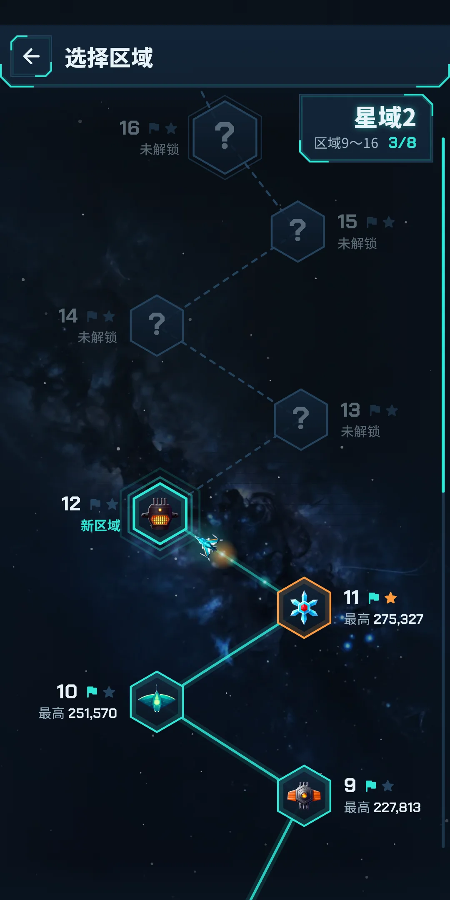
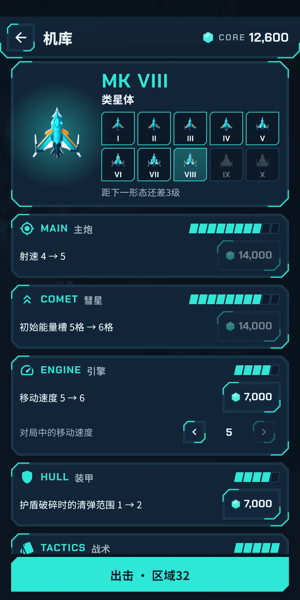
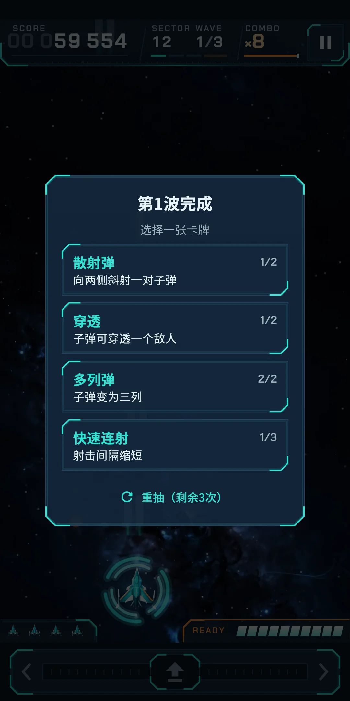
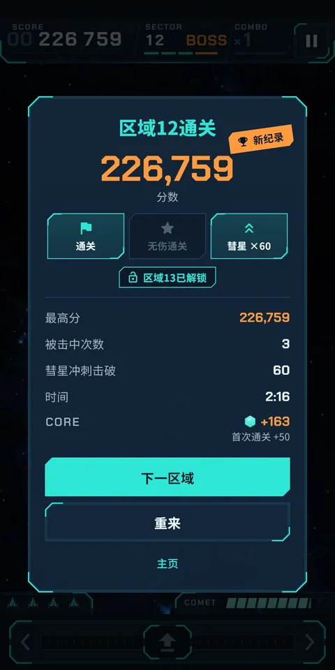

截图







关于应用
| 应用名称 | Cometdive |
|---|---|
| 版本 | 1.0.0 |
| 开发 | Willee Project |
| 支持平台 | Android |
Cometdive 是一款单手就能玩的竖屏街机太空射击游戏。在屏幕任意位置左右拖动，战机就会移动，射击自动进行。敌人成群结队飞来，并俯冲攻击你。击落俯冲的敌人来填充彗星能量槽，战机就会化身彗星，笔直贯穿整个编队（彗星冲刺）。
- 没有注册，也不用登录。第一次打开时，会先进入新手教程，在练习区域里学会操作和彗星冲刺。随时可以点跳过结束，也可以在设置里重看。
- 没有网络也能玩。 网络只用于广告，以及发送使用统计和错误报告。
- 语言跟随设备设置。支持简体中文、繁体中文、英语、日语和韩语，也可以在设置里自己选择。
1. 规则
- 一个区域由三波敌人和一名首领组成。击落一波的所有敌人就进入下一波，第三波之后首领出现。击败首领即通关，大约需要三分钟。
- 每个区域开始时你有三架战机。被击中会损失一架战机，并短暂无敌。三架都损失，区域就失败，没有续关。护盾能挡下一次攻击，让你不损失战机（来自卡牌和机库的装甲）。
- 击落敌人会得分。俯冲中的敌人得分翻倍，彗星能量槽也充得更多。
- 连击：击落一个敌人后约 1.2 秒内再击落下一个，连击就加一（最高 ×8），击落得分会乘以连击数。超过时间就回到 ×1。
- 每波结束和区域通关时，会获得奖励分数。用彗星冲刺击落的敌人越多，或一次都没被击中就通关（无伤通关），奖励就越高。
- 通关一个区域，就会解锁下一个区域（第 3、6 章）。
- 游戏过程中的状态不会保存。回到主页后，这个区域要从头再来。
怎么看游戏画面
- 顶部条：分数（八位数）、SECTOR 和 WAVE、COMBO 与连击剩余时间条，以及暂停按钮。首领出场时会出现首领血量框，出场前 WARNING 条会闪烁。
- 战场下方：剩余战机数和 COMET 能量槽（10 格），能量槽满格时 READY 亮起。
- 最底部圆角的一块就是操作条（第 2 章）。
2. 操作
- 拖动：在屏幕任意位置按住并左右拖动，战机会按你拖动的距离左右移动。手指不必放在战机上，战机只在屏幕下方左右移动。
- 下方操作条：在战场下方的操作条上拖动也一样，手指不会挡住战机。拖向哪一侧，那一侧的 ‹ 或 › 就会亮起，能量槽满格时整条操作条会泛起橙光。
- 射击自动进行。 移动到敌人下方去命中它们就行。
- 暂停：点顶部条的暂停按钮。按返回键或把应用切到后台，也会暂停。暂停窗口里有继续、重来（这个区域从头开始）、设置和主页。在暂停里更改设置，会立刻用到这一局。
- 拖动灵敏度是固定的，设置里没有。在机库强化引擎，灵敏度会和移动速度一起提高（第 7 章）。
3. 彗星冲刺
- 击落敌人会填充 COMET 能量槽。队形中的敌人充得少，俯冲中的敌人充得多。10 格充满后，READY 亮起，下方操作条泛起橙光。
- 能量槽满格后，用下面两种方式之一发动。
- 向上滑：在屏幕上快速向上滑动手指（↑ 快速上滑：彗星冲刺）。
- 点按操作条：在下方操作条的任何位置轻点一下再抬起（也可以点按下方的操作条）。长按或拖动不会发动。
- 战机会化作彗星，在大约 0.8 秒内冲上屏幕，贯穿路径上的敌人。能量槽满格时，会显示冲刺路径（山形标记）和路径内敌人的圆环。冲刺途中也可以左右拖动，把路径稍微拐一点。
- 冲刺可以击穿披着护盾环的敌人，也能伤到首领，但无法击破光束。冲刺会用掉能量槽，需要重新充满。
- 用彗星冲刺击落的数量会显示在结算画面和记录里，也计入区域通关奖励。
- 游戏中，在最初几次冲刺之前会出现提示文字，告诉你怎么做。
4. 卡牌
- 每波结束后，从三张卡牌中选一张（第 N 波完成 · 选择一张卡牌）。选中的卡牌只在这个区域内叠加，下一个区域从头开始。
- 再次选到同一张卡牌，会升到 2 级。有些卡牌只有一级。
- 一开始只有十种卡牌，其余的会随着星域的提升，一张一张加入候选（表中的“星域”）。
| 卡牌 | 效果 |
|---|---|
| 多列弹 | 子弹变为两列 → 三列 |
| 散射弹 | 向两侧斜射一对子弹 → 两对 |
| 快速连射 | 射击间隔缩短（最多 3 次） |
| 穿透 | 子弹可穿透一个敌人 → 两个 |
| 追踪导弹 | 发射追踪最近敌人的导弹 → 更频繁 |
| 辅助无人机 | 一架无人机在旁边一同射击 → 两架 |
| 护盾 | 一层护盾：被击中也不会损失战机 → 再增加一层（选择时全部补满） |
| 彗星充能 | 彗星能量槽充能更快 → 快得多 |
| 俯冲预警 | 敌人俯冲前会闪烁橙光 |
| 额外战机 | 备用战机增加一架 |
| 侧炮（星域 2 起） | 翼尖斜向射击 → 更频繁 |
| 重弹（星域 3） | 每第 4 次射击，直线子弹伤害加倍 → 每第 3 次 |
| 连击保持（星域 4） | 连击维持更久，分数更高 → 维持很久 |
| 俯冲猎手（星域 5） | 对俯冲中的敌人伤害加倍 → 俯冲击破时彗星能量也充得更快 |
| 连锁电流（星域 6） | 击破后电击附近一个敌人 → 两个 |
| 彗星爆发（星域 7） | 彗星冲刺在上方释放冲击波 → 返回原位时也释放冲击波，清除敌弹 |
| 脉冲激光（星域 8） | 定期向上发射贯穿激光 → 更频繁 |
| 彗星尾迹（星域 9） | 彗星冲刺的路径上留下灼烧敌人的火星 → 火星持续更久 |
- 强化机库的战术分支，能让你把卡牌用得更好。第 1 波前先选一张卡牌（出击前选择一张卡牌），每个区域可以重抽（1～3 次，卡牌界面的重抽（剩余 N 次）按钮），再往后可以从四张卡牌中选择（第 7 章）。
5. 敌人、障碍物和首领
这些都可以在图鉴里再看一遍（第 8 章）。某个区域里第一次出现你没遇到过的敌人或首领时，开场会弹出介绍卡片。
敌人与阶级
敌人有 16 个系列，随着星域提升，会出现同一系列的更高阶级。阶级越高越结实，4 级多一种攻击。阶级可以通过机体颜色和白色条纹分辨。
| 名称 | 行为 |
|---|---|
| 夸克 | 编队的主力。在编队中偶尔射击，俯冲时也会射出一发。 |
| 星鳐 | 翻身迅速俯冲，下降途中射出两发。 |
| 奥尔特 | 坚硬难碎。俯冲时呈扇形撒出针弹。 |
| 星团 | 十分结实，第一次被击中时放出两架中微子。 |
| 伽马 | 在编队中用针弹精准瞄准我方战机。 |
| 中微子 | 由星团和首领放出，直接俯冲而下。 |
| 太阳帆 | 以之字形俯冲，每次转向都会投下子弹。 |
| 等离子枪 | 俯冲途中停顿，随后沿直线猛扎下来。 |
| 陨石炮 | 先加热炮管，再发射又大又慢的炮弹。 |
| 拉格朗日 | 摇晃着下沉，并排向正下方投下两发子弹。 |
| 引力弹弓 | 用会向下转弯的子弹压缩你的路线。 |
| 月食 | 俯冲到一半时开火，然后返回原位。 |
| 星尘 | 横穿飞行，沿途留下空雷。 |
| 象限 | 旋转着俯冲，向四个方向散射子弹。 |
| 太阳透镜 | 先画出预警线，再沿线射下光束。 |
| 极光 | 用护罩包住下方的敌人。先打它。 |
精英
精英是带着标记的强化敌人。
| 名称 | 行为 |
|---|---|
| 护盾环 | 身披能挡住两发子弹的护环。挡不住彗星冲刺。 |
| 赏金 | 击破可得高分和彗星能量。俯冲一次后就会逃走。 |
| 前装甲 | 在编队中会弹开子弹。趁它俯冲时攻击。 |
| 加速 | 俯冲得更快、更频繁。 |
| 分裂 | 击毁后会迸出两架中微子。 |
| 雷尾 | 被击毁的地方会留下一枚空雷。 |
障碍物
| 名称 | 行为 |
|---|---|
| 小行星 | 缓缓坠落的岩石。击碎后会裂成两块小石头。 |
| 爆裂晶体 | 射击引爆后，会一并摧毁周围的敌人。 |
| 残骸 | 无法摧毁的残骸，会挡住双方的子弹。 |
| 流星雨 | 警告之后，小流星沿一条线倾泻而下。 |
| 重力井 | 会把你的子弹拉向中心的漩涡。 |
| 电弧柱 | 流动的电流会挡住你的子弹。击毁一根柱子就会断开。 |
敌方子弹
敌方子弹不只靠颜色区分，还能通过形状和光效分辨。
| 名称 | 行为 |
|---|---|
| 球弹 | 圆而慢，是最常见的敌方子弹。 |
| 针弹 | 细而快，有时呈扇形散开。 |
| 炮弹 | 又大又慢，会压缩你的闪避空间。 |
| 折转弹 | 在固定时刻转向一次。 |
| 空雷 | 停下后闪烁，再炸成一圈子弹。两发即可熄灭。 |
| 光束 | 沿预警线落下的光柱。彗星冲刺也无法击破。 |
危险攻击的预警
危险的攻击从刚开始的那一刻起就会有预警，让你看得清楚。比如光束会先画出预警线，空雷在爆炸前会闪烁，流星雨在警告之后倾泻而下，弹幕帘的缝隙会显示为一条空出来的通路。首领出场时会出现 WARNING 条。选择俯冲预警卡牌，敌人在俯冲前会闪烁橙光。
首领
每个区域的最后都有首领。星域的最后一个区域，会出现新的首领，或首领的第二形态（名称后加 II），第二形态的攻击会有所不同。
| 首领 | 行为 | 第二形态（II） |
|---|---|---|
| 泰坦 | 用两座炮塔瞄准射击，并从舰体放出环形与螺旋弹幕。 | 炮塔护罩被炸飞，露出三根炮管。它会移动位置，并降下留有缝隙的弹幕帘。 |
| 星云 | 从翼炮扇形射出针弹，并放出环形与螺旋弹幕。 | 展开鳍翼猛冲，两门翼炮交错扫射弹幕。 |
| 棱镜 | 两块晶体碎片射出针弹环，本体放出螺旋弹幕。 | 晶刃裂开，碎片环绕旋转，并竖起光束栅栏。 |
| 恒星炉 | 从排气炮瞄准发射炮弹，并降下留有缝隙的弹幕帘。 | 炉栅打开，火球涌出。它会猛冲、降下弹幕帘，并抛撒空雷。 |
| 天球仪 | 四个球体一边旋转一边向外射击，扇形折转弹会转向你。 | 圆环倾斜，球体加速。它会抛撒空雷并发射折转弹。 |
| 离子塔 | 竖起光束栅栏，并从两个电容器扇形扫射。 | 线圈缠上电环。它会依次点亮光束栅栏、降下弹幕帘，并召唤引力弹弓。 |
6. 模式
主页
顶部有标题和主页画面的动态效果，右上角是齿轮形的设置按钮。下面有两个大按钮和三个小按钮。
| 按钮 | 作用 |
|---|---|
| 开始区域 N | 直接开始已解锁的区域中最靠后的一个，并显示它的首领和你的最高分 |
| Daily | 开始今天的 Daily。会显示今天的首领，如果今天已经完成过，还会显示今日最高和连续天数 |
| 选择区域 | 从已解锁的区域中挑选（见下文）。会显示当前所在星域的编号 |
| 机库 | 用核心强化战机（第 7 章）。会显示核心余额，有买得起的强化时会出现圆点 |
| 记录 | 打开记录和图鉴（第 8 章）。会显示最高区域 |
Classic
- 八个区域为一个星域。 星域 1 是区域 1～8，从区域 9 起会无止境地继续下去（星域 2、星域 3……）。
- 通关一个区域，就会解锁下一个区域。已解锁的区域随时可以重玩，并保留最高分。尚未解锁的区域显示为未解锁，通关上一个区域后解锁。
- 星域的最后一个区域（第八个）会有新的首领，或首领的第二形态在等你。通关后会出现星域 N 突破。
- 得分倍率随着星域提升而提高，最高 ×3。记录的重点是你到达的最高区域。
- 在机库买到的强化，在 Classic 里生效（第 7 章）。
选择区域
- 每个星域是一页，上下滑动翻页（下面是之前的星域，上面是下一个星域）。一开始显示你接下来要玩的区域所在的星域，只能翻到那个星域为止。
- 每一页是一条曲折向上的航线，每个区域是一个六边形格子，里面是首领的图案（星域的最后一格更大）。尚未解锁的区域，首领会被 ? 遮住。你接下来要玩的区域上方悬浮着你的战机。
- 格子外侧的标签显示区域编号、两个奖章位（通关、无伤通关）和最高分（没有记录时显示新区域，未解锁时显示未解锁）。
- 地图上方的角落里是星域名称、区域范围和已通关的数量，右侧边缘的细线表示当前星域所在的位置。
- 点按已解锁的格子就会开始那个区域，点按未解锁的格子会告诉你怎样解锁。
结算画面
区域结束后，分数会往上跳动，随后显示结算。你会看到分数、最高分（超过时显示新纪录）、被击中次数、彗星冲刺击破、时间，以及三个奖章位（通关、无伤通关、彗星 ×N）。通关时会出现区域 N 已解锁，并显示获得的核心（首次通关 +N、星域最终区域首次通关 +N）。如果有买得起的强化，会出现可强化 N 项和机库按钮。按钮有下一区域（通关时）、重来和主页。
Daily
- 每天开放一个区域。日期以设备的日期为准，午夜进入新的一天。
- 同一天，遇到同一名首领的玩家会得到相同的波次和相同的卡牌候选。首领会在你到目前为止遇到过的首领中按天轮换，所以没遇到过的首领不会出现在 Daily 里（如果一个都没遇到，就是第一名首领泰坦）。首领的第二形态不会出现在 Daily 里。当天的首领在你第一次查看时就确定，当天不会再变，新遇到的首领从第二天起加入轮换。
- Daily 中所有人使用相同的战机，不计机库强化。 开场卡片上会显示 STANDARD。
- 一天可以玩多次，保留当天的最高分。
- 完成一局（无论通关还是失败）的那天，会让连续天数接上，漏掉一天就中断。连续天数会显示在记录画面、主页的 Daily 按钮和结算画面上。
- Daily 也能获得核心：按分数得到的核心，再加上当天第一次完成的奖励（今日首次完成 +N）。
7. 机库
机库是用游戏中获得的核心强化战机的地方。从主页的机库，或结算画面的机库按钮进入。这个画面没有横幅广告。
怎样获得核心
- 无论 Classic 还是 Daily，每打完一局，都会获得“分数 ÷ 2,000”（向下取整）的核心，没通关也一样。
- 第一次通关某个区域，会额外获得 50；第一次通关星域的最后一个区域，再额外获得 200。Daily 在当天第一次完成时额外获得 50。
- 核心只能靠游玩获得，无法在应用内购买。
强化
- 一共五个分支，合计 35 个阶段。顶部条显示核心余额，战机面板显示当前形态，下面是五行分支（阶段格、“当前 → 下一级”的效果、价格按钮），最底部是出击 · 区域 N。
- 价格按钮点一次，会在 2 秒内变成确认 N，再点一次才会购买。核心不够时按钮会变暗，无法购买。不能退还。
- 效果用简单的数字显示，例如“射速 1 → 2”。第一次来时会出现提示便条。
| 分支 | 阶段 | 提升的内容 |
|---|---|---|
| 主炮 | 10 | 射速、子弹粗细、子弹伤害 |
| 彗星 | 10 | 初始能量槽、冲刺宽度、冲刺对首领的伤害 |
| 引擎 | 5 | 移动速度 |
| 装甲 | 5 | 初始护盾、首领战前补充一格空护盾、护盾破碎时清除周围敌弹（范围也会变大） |
| 战术 | 5 | 第 1 波前选择一张卡牌、每个区域的重抽次数（1～3 次）、从四张卡牌中选择 |
- 引擎一行的对局中的移动速度 ‹ › ，可以在已购买的阶段里降低对局中使用的移动速度（觉得战机太快的时候）。
- 阶段越高，所需核心越多，全部买齐大约需要 16 万 4 千核心。
- 机库强化只在 Classic 里生效。Daily 和新手教程始终使用同样的基础战机。
战机形态
已购买阶段的总数增加，战机的形态会在十种之间变化：MK I（星火）、MK II（耀斑）、MK III（烈焰）、MK IV（炼狱）、MK V（超新星）、MK VI（脉冲星）、MK VII（磁星）、MK VIII（类星体）、MK IX（极超新星）、MK X（大爆炸）。阶段总数达到 3、7、12、19、23、26、29、32、35 时会变化。形态改变的是外观，能力由买到的强化决定。变化的瞬间会播放演出，并显示下次出击起为 MK N。
- 形态一行里，已达到的形态有图案，未达到的是剪影。点按已达到的形态，可以查看那架战机（当前战机：MK N 保持不变）。这只是查看，实际驾驶的战机不会改变。
- 战机面板会显示距下一形态还差几级（距下一形态还差 N 级，最后是最终形态）。
8. 记录和图鉴
从主页的记录进入。
- 最高区域（大数字）、已通关区域、无伤通关区域、最高分
- 星域记录：点按后可以查看所有星域的记录（每个星域八个区域的首领和最高分）。
- Daily：当前连续、最长连续、今日最高、历史最高、游玩天数
- 累计记录：游玩时间、完成局数、通关次数、无伤通关、击破敌人、彗星冲刺击破敌人、彗星冲刺、最高连击、击破首领、损失战机
- 图鉴：敌机、精英、首领、障碍物、卡牌、敌方子弹，共 109 个条目。每个分类会显示最近发现的条目图案、已发现 N/M 和进度条，点按分类可以浏览其中的条目。条目在游戏中第一次遇到时填入，还没遇到的显示为剪影，并标注尚未发现。战机形态一栏会填入你在机库里达到的形态。
9. 设置
从主页右上角的设置（齿轮）进入。游戏过程中也可以从暂停窗口进入。分为游戏和通用两组。
游戏
| 项目 | 说明 |
|---|---|
| 音效 | 开关音效 |
| 振动 | 开关振动（被击中、击败首领、彗星冲刺、战机形态改变时） |
| 减少特效 | 减少晃动、闪烁等特效 |
| 游戏音乐 | 开关游戏过程中的背景音乐 |
| 菜单音乐 | 开关主界面和菜单中播放的音乐 |
| 音乐音量 | 以 10% 为单位选择游戏音乐和菜单音乐的音量。两者至少有一个打开时才能调整 |
| 音效音量 | 以 10% 为单位选择音效的音量。音效打开时才能调整 |
| 画面晃动 | 被击中或大爆炸时画面会晃动。可以关闭 |
通用
| 项目 | 说明 |
|---|---|
| 语言 | 跟随系统（默认），或从列表（English·日本語·한국어·简体中文·繁體中文）中自己选择 |
| 重看新手教程 | 重新玩一遍新手教程。不计入记录 |
| 隐私选项 | 查看或更改广告同意设置。只在需要同意的地区（如欧洲）显示 |
| 关于 | 版本、本说明（玩法说明）、隐私政策、开源许可。在许可列表中可以看到制作图片和音乐所用的工具 |
画面颜色只有一种深色主题。
10. 广告与记录保存
- 游戏过程中没有广告，也没有付费。 游戏画面、卡牌选择、暂停、新手教程、结算画面和机库里都没有广告。
- 主页、选择区域和记录画面的最底部有一条横幅广告。
- 全屏广告只会在结算画面点按了下一步操作（下一区域、重来、主页等）之后，偶尔出现。游戏时间（只计算游玩进行的时间，菜单和暂停不算）累计满 20 分钟后才可能出现，之后要在上一次广告之后再玩 15 分钟才会再出现。打开应用后第一局的结算、失败后立刻点重来、以及新手教程之后，都不会出现。
- 在需要同意的地区（如欧洲），会出现广告同意画面。之后可以在设置的隐私选项中更改。
- 应用内没有任何需要付费购买的内容。
- 网络只用于广告以及使用统计和错误报告。
- 记录和设置保存在设备里。如果设备的 Google 备份（Android 自动备份）是开启的，它们会一起进入备份，换设备后可以接着玩。卸载应用也会删除设备上的记录。
- 详情请见隐私政策。